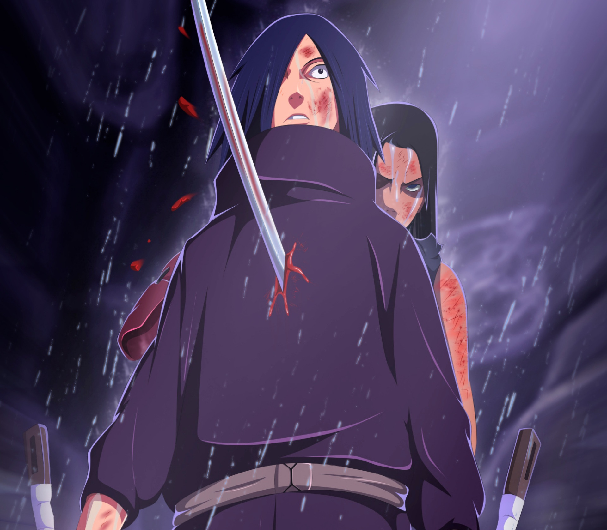
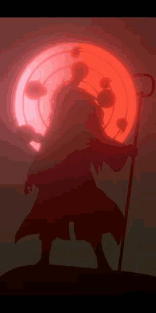

História Resumo
Uchiha Madara foi um dos principais viloes de Naruto shippuden e um lendário membro do clãn Uchiha,
sendo responsável pela maioria dos eventos. Madara nasceu durante guerras entre ninjas
e morreu de velhice em um subterraneo isolado, com planos de reviver no futuro e realizar
seu grande sonho do Tsukuyomi Infinito, onde deixaria todos os seres vivos do planeta
em um sonho eterno onde não haveria mais guerras !Ele fundou Konoha ao lado de seu amigo de infância e rival, Hashirama Senju , com a intenção de iniciar uma era de paz. Quando os dois não chegaram a um acordo sobre como alcançar essa paz, eles lutaram pelo controle da vila, um conflito que terminou com a morte de Madara. Madara, no entanto, reescreveu sua morte e se escondeu para trabalhar em seus próprios planos . Incapaz de completá-lo em sua vida natural, ele confiou seus conhecimentos e planos a Obito pouco antes de sua morte real. Anos depois, Madara seria revivido, apenas para ver seus planos frustrados e, finalmente, e finalmente, perceber o erro de seus caminhos e fazer as pazes com Hashirama antes de sua morte final.

Começo
Madara nasceu na Era dos Estados Combatentes, e era o mais velho dos cinco filhos de Tajima Uchiha.
Junto com seus irmãos, ele nasceu no campo de batalha, e só conhecia batalhas até se encontrar
com Hashirama, um garoto da mesma idade em que estava pescando em um lago, depois de um tempo se
conhecendo, eles viraram amigos, mas o que não sabiam era que os dois estavam de lados opostos na
guerra... Um
era membro do clãn Uchiha enquanto o outro era do clãn senju, que eram como rivais eternos. Quando a
familía dos
dois descobriu a amizade e o encontro dos dois, eles interviram e os separam, mas isso não foi
suficiente para
terminar a amizade dos dois, eles continuaram se encontrando em segredos e planejaram juntos construir
paz
apartir de uma nação nomeada como Aldeia da folha.
Edo-Tensei
Uchiha Madara foi revivido atraves de seu grande plano, organizado junto com Obito, mas saiu um pouco do
que ele
planejava, pois em vez de ser revivido atráves dos seus novos olhos conquistados o "rinnegan", ele foi
revivido
pelo Kabuto atráves do Edo tensei, e então descobriu que Obito o tinha traido e não tinha planos de
revive-lo.
4º Grande guerra
ninja
Uchiha Madara foi um dos principais viloes de Naruto shippuden,
sendo responsável pela maioria dos eventos. Madara nasceu durante guerras entre ninjas
e morreu de velhice em um subterraneo isolado, com planos de reviver no futuro e realizar
seu grande sonho do Tsukuyomi Infinito, onde deixaria todos os seres vivos do planeta
em um sonho eterno onde não haveria mais guerras !
Mugen tsukuyomi
Uchiha Madara foi um dos principais viloes de Naruto shippuden,
sendo responsável pela maioria dos eventos. Madara nasceu durante guerras entre ninjas
e morreu de velhice em um subterraneo isolado, com planos de reviver no futuro e realizar
seu grande sonho do Tsukuyomi Infinito, onde deixaria todos os seres vivos do planeta
em um sonho eterno onde não haveria mais guerras !
